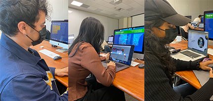
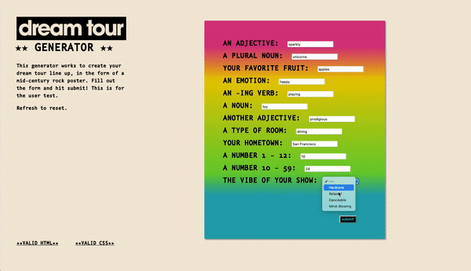

I met with Miguel, Gennifer, and Mahima to conduct user testing during class. They had lots of great comments that will definitely help me improve my Final Project — here are the three most significant observations:
1. Allow for more customization options (Examples include adding a date, year, color options, etc).
2. Make the option to reset more option — maybe make it a button.
3. Style the form text fields to be different from the default.
 I really enjoyed the conversations I had during my user tests. I feel like I will definitely include the reset button idea — it makes a lot of sense. I also want to include some further customization options, which might make the entire project a bit more dynamic. I also want to play around a bit with styling, and make the overall project more playful.